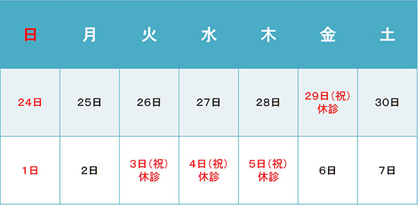

診療についてのお知らせ(4月〜5月･GW･6月:鍼灸室)
重要
診療の変更がございます。ご確認下さい。
- 4月5日(火) 山口医師・中山医師による二診となります(午後休診）
- 4月6日(水) 午前 山口医師・田村医師による二診となります 午後 田村医師による一診(17時まで)
- 4月8日(金) 山口医師休診(代診:俵院長)
- 4月22日(金) 田島医師休診(代診:俵院長)
- 4月23日(土) 田島医師休診(代診:俵院長)
*4月5日･6日は日本遺伝カウンセリング学会出席のため、俵院長は不在となります。
*3月･4月の火曜日午後は休診とさせて頂いております。ご迷惑をおかけいたしますが、ご理解の程よろしくお願い申し上げます。
ゴールデンウイーク中の診療についてのお知らせ
- 4月29日(金) 休診
- 4月30日(土) 通常診療
- 5月1日(日) 休診
- 5月2日(月) 通常診療
- 5月3日(火) 休診
- 5月4日(水) 山口医師による一診 午後:休診
- 5月5日(木) 休診
- 5月6日(金) 通常診療
* 5月4日(水)は指定患者様のみの診察とさせて頂きます。
鍼灸室 ゴールデンウイーク休診のお知らせ

ゴールデンウイークに伴い診療日時が変更になりますのでご報告させて頂きます。鍼灸部門はゴールデンウイーク期間中、添付画像の通り休診させて頂きます。なお、前後の診療日は混雑が予想されます。予約システムをお使い頂くと待ち時間が軽減しますのでご利用ください。
ご不明な点などがありましたらスタッフまでお声かけ下さい。
 ページの先頭へ
ページの先頭へ